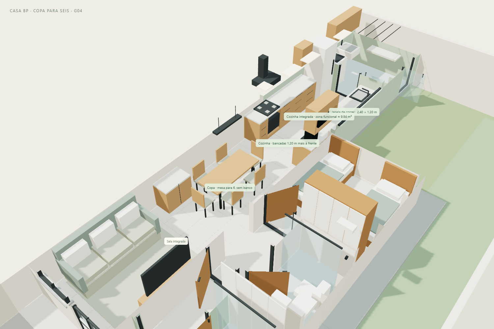
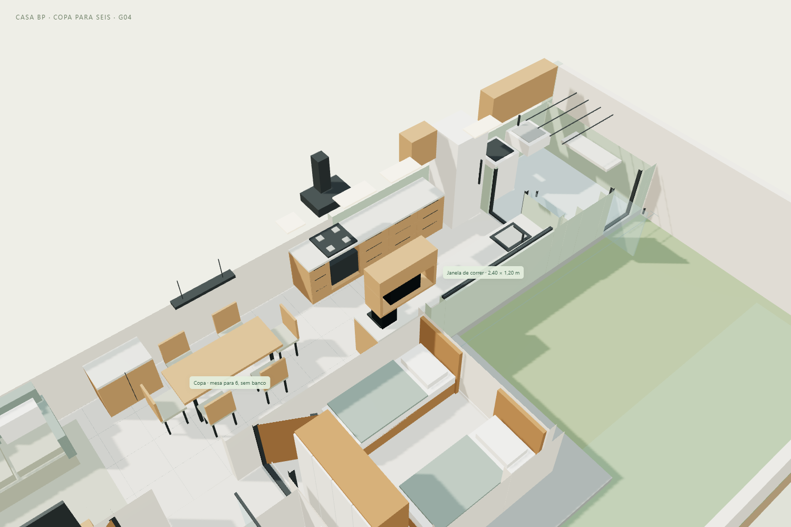

CASA BP · REVISÃO G04 · 11/11/2026
A mesa foi trazida 1,65 m em direção à sala, para a região ocupada pelo pequeno buffet. O buffet e o banco foram retirados; o móvel maior do café foi mantido. A nova mesa tem seis cadeiras individuais: duas de cada lado e uma em cada cabeceira.
Abrir projeto 3D · Entrar no tour atualizado · Baixar modelo G04

| Elemento | Medida nominal |
|---|---|
| Mesa para seis | 1,65 × 0,70 m; tampo a 0,75 m do piso |
| Cadeiras | 6 unidades, sem banco; assento 0,42 × 0,40 m, altura do assento 0,45 m |
| Centro da mesa | Distância de 5,70 m da frente original da casa; antes 7,35 m |
| Distância entre mesa e parede esquerda | 0,75 m, incluindo o espaço para as cadeiras desse lado |
| Passagem à direita das cadeiras | Aproximadamente 0,60 m, com cadeiras junto à mesa |
| Avanço das bancadas | 1,20 m em direção à copa; dois módulos de piso de 0,60 m do modelo |
| Corredor de trabalho na cozinha | 1,20 m nominal, entre bancadas de 0,60 m de profundidade |
| Bancada esquerda | 2,90 m lineares |
| Bancada direita | 3,60 m lineares |
| Total de bancadas | 6,50 m; anteriormente 4,10 m |
| Zona funcional da cozinha | Cerca de 9,94 m²; antes 7,06 m² |
Os 2,88 m² adicionais atribuídos à cozinha vêm da redistribuição da área integrada existente. Não representam obra nova nem aumento da casa ou do terreno. A copa aproveita também a transição aberta com a sala.
A faixa interna mede 2,40 m de largura. Seis lugares exigem mesa estreita e cadeiras compactas. A folga de 60 cm corresponde à posição desenhada, com as cadeiras junto à mesa; afastá-las para sentar reduz a passagem. O estudo não comprova circulação confortável com todas as cadeiras puxadas, pessoas sentadas, acessibilidade ou conformidade normativa. Conferir os móveis reais antes de comprar.
As duas bancadas começam 1,20 m antes da posição anterior. O cooktop, forno e coifa avançam juntos, mantendo o conjunto alinhado. Foram representados mais gaveteiros, uma área de preparo na chegada, uma cafeteira e um nicho aéreo para o micro-ondas. O micro-ondas saiu da bancada para liberar superfície de trabalho.
A geladeira permanece ao fundo, na esquerda. A pia continua voltada para o quintal; a janela panorâmica de 2,40 × 1,20 m foi preservada. O novo aéreo fica antes da janela, sem cobrir sua área de vidro. A porta da lavanderia e os acessos da casa permanecem.

O tour foi ajustado para observar a nova mesa e a cozinha. O percurso mantém 16 paradas e desvia das cadeiras na posição desenhada. A câmera permanece com olhos a 1,60 m do piso, e o corpo simplificado usado para navegar tem 0,40 m de largura; esse percurso não é uma validação ergonômica.
O pendente foi deslocado para o centro da mesa. O ponto opcional de tubo solar permanece na posição anterior, agora próximo à chegada da cozinha: não foi proposta outra abertura na laje nesta revisão. Não se fez simulação luminotécnica.
Frente coberta, portão, porta social, garagem, carro em escala, quartos, closet, banheiros, paredes, cobertura e corredor lateral foram mantidos. As fontes da revisão G03 e seu GLB permanecem guardados. Esta revisão altera mobiliário e distribuição de usos, sem propor novas demolições. Ligações elétricas, marcenaria, ferragens, instalação de equipamentos e medidas finais dependem de conferência e detalhamento.
Memorial da frente e dos acessos da revisão G03. Carro “2024 BYD Seal”, Ddiaz Design, adaptado sob CC BY-NC-SA 4.0.